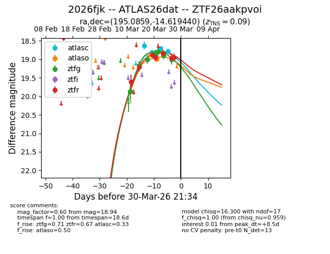
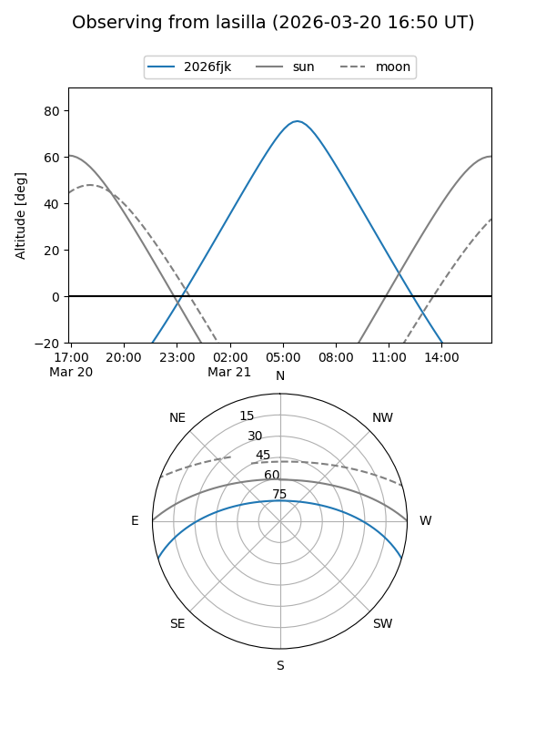
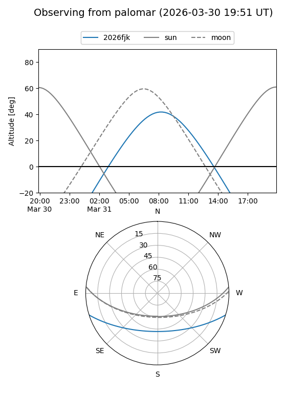
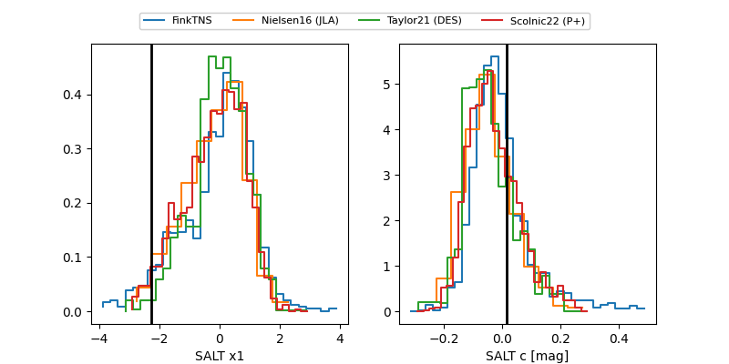

2026fjk
Target 2026fjk at 2026-03-30 21:37
Aliases and brokers:
FINK: link
Lasair: link
ALeRCE: link
TNS: link
YSE: link
alt names
ZTF26aakpvoi (ztf,fink_ztf)
2026fjk (tns,yse)
ATLAS26dat (atlas)
Coordinates:
equatorial (ra, dec) = 195.0859,-14.61944
equatorial (HMS+DMS) = 13:00:20.60,-14:37:09.99
galactic (l, b) = (306.1647,+48.19640)
Flags:
confirmed ia
Photometry:
last atlasc=18.79, atlaso=18.99, ztfg=19.00, ztfr=18.94
4 atlasc, 1 atlaso, 8 ztfg, 7 ztfr detections
Lightcurve

Visibility


Additional plots
